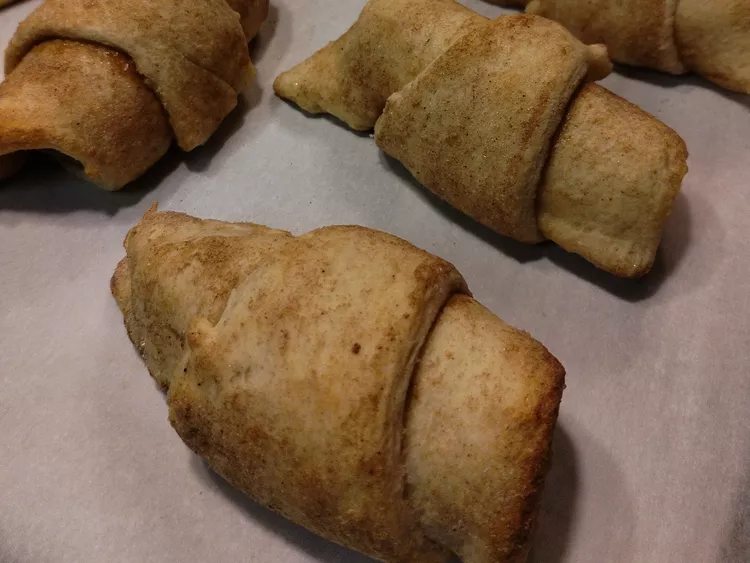

Chai Crescent Rolls with Sausage

Description
Chai Crescent Rolls that are made from refrigerated crescent roll dough, spiced with chai latte mix and wrapped
around sausages
Ingredients
- 8 cooked breakfast sausages
- 8 ounce package refrigerated crescent rolls
- 1/2 teaspoon chai latte mix
Steps
- Preheat oven to 350 degrees fahrenheit
- Place sausages on plate and warm in microwave for about 30 seconds
- Sprinkle 1/2 teaspoon chai mix on a plate. Separate crescent roll dough into triangles, press each side of one
crescent roll triangle into chai powder. Place a sausage at the wide end of the triangle and roll it up
- repeat with remaining crescent rolls and place on a baking sheet
- Bake until golden, 10-12 minutes